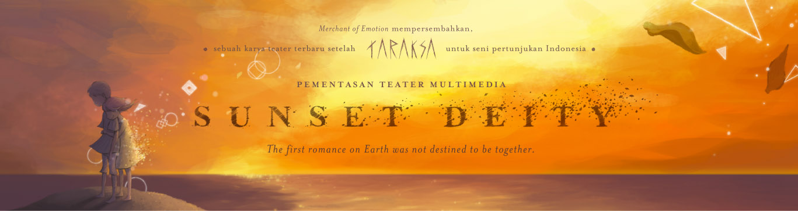

Merchant of Emotion, sebagai sebuah transformasi dari tim Teater EPIK yang sukses dengan pementasan Taraksa 2013 lalu, akan menghadirkan pertunjukan teatrikal terbarunya, Sunset Deity, Januari 2015 mendatang. Sunset Deity adalah Pementasan Teater Lintasmedia yang mengusung penggabungan teater, koreografi serta video mapping sebagai sebuah bahasa pementasan baru.
“Waktu” menjadi tema besar dari rangkaian cerita yang akan diangkat pada pementasan. Cerita berputar pada proses pendewasaan yang dialami seorang Bocah Tanpa Nama sebagai entitas pertama yang hadir di awal penciptaan dunia.
Pementasan perdana dari Sunset Deity akan dilaksanakan dari tanggal 23 - 25 Januari 2015, bertempat di Teater Tertutup Taman Budaya Jawa Barat, Bandung.


Mentari sudah turun, dan sang bocah akan berkenalan dengan malam yang hadir dalam cekam. Makhluk-makhluk bertaring tajam menggeliat muncul dari seluruh penjuru gelap, terpandu oleh nyanyian Bulan yang mengiris; dan sang bocah dihadapkan pada pelajaran hidup yang mesti ia lewati sepenuhnya sendiri untuk dapat menjadi dewasa.